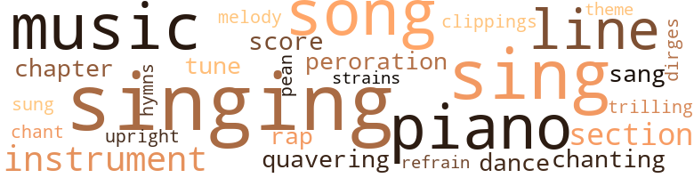

Unfettered: A Novel, by Griggs, Sutton Elbert (1902)
70 music-related terms matched in this text.
Most frequent terms in this topic: singing (8); sing (6); music (5); piano (5); song (4)
chant.n.01
Definition: a repetitive song in which as many syllables as necessary are assigned to a single tone
| word | sentence |
|---|---|
| chant | Ofttimes as a boy Maurice Dalton had stood on the outer edge of Negro open air camp meetings and had heard , with deep emotion , this chant ; and as the music now comes floating into his room his paroxysms cease , a smile plays upon his face which , though wasted , is handsome still . |
chapter.n.01
Definition: a subdivision of a written work; usually numbered and titled
| word | sentence |
|---|---|
| chapter | Such was a command addressed to Morlene by Lemuel Dalton while he was sitting at the breakfast table in the Dalton house , a few days subsequent to the happenings recorded in the preceding chapter . |
| chapter | A few years subsequent to the events recorded in the last chapter , in the city of R ----- , where our country friends had gone to live , on a sultry summer evening , near sunset , Morlene went forth into the front yard of her home for the purpose of watering her flowers . |
clipping.n.01
Definition: an excerpt cut from a newspaper or magazine
| word | sentence |
|---|---|
| clippings | He was standing before his desk which was strewn with books , pamphlets and newspaper clippings , bearing on the subject engaging his attention , when suddenly his door was thrust open . |
dance.n.01
Definition: an artistic form of nonverbal communication
| word | sentence |
|---|---|
| dances | Regardless of the condition of crops you quit to go to picnics , shows , dances , camp meetings , funerals , and on every excursion that comes along . |
dance.v.03
Definition: skip, leap, or move up and down or sideways
| word | sentence |
|---|---|
| dance | And the unthinking youths were now employed to dance and sing and laugh away the aspirations of a people . |
dirge.n.01
Definition: a song or hymn of mourning composed or performed as a memorial to a dead person
| word | sentence |
|---|---|
| dirges | The hearse led the way being followed by the great concourse of the members of the church , walking en masse and chanting mournful dirges as they proceeded . |
hymn.n.01
Definition: a song of praise (to God or to a saint or to a nation)
| word | sentence |
|---|---|
| hymns | Harry had , according to the custom prevailing , chosen the hymns to be sung at his funeral , the text from which the funeral sermon was to be preached , the ministers who were to officiate - in fact , had arranged for every detail of the occasion . |
music.n.01
Definition: an artistic form of auditory communication incorporating instrumental or vocal tones in a structured and continuous manner
| word | sentence |
|---|---|
| music | One afternoon as Dorian sat in his room in the city of R ---- , musing on the task before him , his elbows on the table and his noble , handsome face resting in his hands , rich music , as on a former occasion more than a year ago , came floating up to him . |
| music | The music revealed the touch and the voice of Morlene . |
| music | Ofttimes as a boy Maurice Dalton had stood on the outer edge of Negro open air camp meetings and had heard , with deep emotion , this chant ; and as the music now comes floating into his room his paroxysms cease , a smile plays upon his face which , though wasted , is handsome still . |
| music | Morlene entered the music room and decided to amuse herself by playing until the child should come . |
| music | " My soul is the seat of a long continued storm these days , and your music was so refreshing , " he continued . |
musical_instrument.n.01
Definition: any of various devices or contrivances that can be used to produce musical tones or sounds
| word | sentence |
|---|---|
| instrument | The Republican party became the willing instrument of truth to effect that result . |
| instrument | Now that the result has been achieved , I must not confound the power with its instrument . |
| instruments | The charge has often been made that we bestow upon these instruments of our salvation the same devotion that we yielded to the creators and original wielders of the instruments . |
| instruments | The charge has often been made that we bestow upon these instruments of our salvation the same devotion that we yielded to the creators and original wielders of the instruments . |
paean.n.02
Definition: (ancient Greece) a hymn of praise (especially one sung in ancient Greece to invoke or thank a deity)
| word | sentence |
|---|---|
| pean | But as she reached the words , " Hallelujah , " the notes swelled into a grand pean of triumph , her voice trilling so wondrously , even upon such a high elevation . |
peroration.n.02
Definition: (rhetoric) the concluding section of an oration
| word | sentence |
|---|---|
| peroration | Dorian closed his speech with a thrilling peroration , urging the Negroes to gird themselves for the holy task of carrying to the uttermost parts of the earth the doctrine of the inherent , inalienable equality of all men . |
| peroration | The tumultuous scene which accompanied and followed this highly dramatic peroration beggars description . |
piano.n.01
Definition: a keyboard instrument that is played by depressing keys that cause hammers to strike tuned strings and produce sounds
| word | sentence |
|---|---|
| piano | She sat down on the piano stool whence she had arisen . |
| piano | Morlene first began to play a light air upon the piano . |
| piano | Soon she was making the piano tell her heart 's full story , to be borne away , as she thought , upon the wings of the passing breeze . |
| piano | The teaching over , Morlene proceeded to amuse herself by playing on the piano . |
| piano | With a merry laugh at her own frolicsomeness , Morlene struck the piano keys a farewell blow and arose to go . |
rap.n.05
Definition: genre of African-American music of the 1980s and 1990s in which rhyming lyrics are chanted to a musical accompaniment; several forms of rap have emerged
| word | sentence |
|---|---|
| rap | Giving the proper rap at a door , he was admitted . |
| rap | At a late hour the accustomed rap was heard at the door and it was opened . |
refrain.n.01
Definition: the part of a song where a soloist is joined by a group of singers
| word | sentence |
|---|---|
| refrain | Then came the refrain in low , reverential tones , beauty muffling itself in the presence of higher sentiments . |
score.n.02
Definition: a written form of a musical composition; parts for different instruments appear on separate staves on large pages
| word | sentence |
|---|---|
| score | Satisfied on this score , he put it back into the pocket from which he had taken it . |
| score | It is his purpose to settle this old score before assuming charge of his estate on the morrow . |
section.n.01
Definition: a self-contained part of a larger composition (written or musical)
| word | sentence |
|---|---|
| section | A few cows had come to the pond and stood in one section thereof , the embodiment of contentment , leisurely tinkling their bells . |
| section | Instead of going to the lodge meeting , however , Tony Marshall went to the section of the city where were congregated practically all of the vicious Negroes of R ---- . |
| section | She was born and reared in a section of the State of Maine where no Negroes whatever live . |
sing.v.02
Definition: produce tones with the voice
| word | sentence |
|---|---|
| sing | " Teddy , please sing dat chune ergin , " she said . |
| sing | Aunt Catherine with her broken voice now tried to sing the following lines , swinging to and fro as she sang : " De Gospil train am cornin ' , I heah it jes ' at han ' , I heah de car wheels movin ' , Er rumblin ' through de lan ' Git on bo 'd , little chillun , Git on bo 'd , little chillun , Git on bo 'd , little chillun , Dare 's room fur many mo ' . " |
| sang | Aunt Catherine with her broken voice now tried to sing the following lines , swinging to and fro as she sang : " De Gospil train am cornin ' , I heah it jes ' at han ' , I heah de car wheels movin ' , Er rumblin ' through de lan ' Git on bo 'd , little chillun , Git on bo 'd , little chillun , Git on bo 'd , little chillun , Dare 's room fur many mo ' . " |
| sing | When Morlene began to sing her eyes glistened with tears ; but these now disappeared as a look of submission stole therein . |
| sung | Harry had , according to the custom prevailing , chosen the hymns to be sung at his funeral , the text from which the funeral sermon was to be preached , the ministers who were to officiate - in fact , had arranged for every detail of the occasion . |
| sing | And the unthinking youths were now employed to dance and sing and laugh away the aspirations of a people . |
| sing | Any Negro that could die " happy , " die in the midst of a frenzy of joyous emotions , was deemed by the mass of Negroes as assured of an entrance into heavem In order to produce this condition of ecstasy , they would gather about the bedside of the dying and sing such songs as were calculated to deeply stir the emotions of the passing one . |
| sang | In plaintive tones , low , timorous and wavering at first , then louder and bolder , in sweetest melody , they sang : " Swing low , sweet chariot , Cum fur ter carry me home ; Swing low , sweet chariot , Cum fur to carry me home . " |
| sing | At length Morlene began to play and sing : " John Brown 's body lies moulding in the clay ; John Brown 's body lies moulding in the clay ; John Brown 's body lies moulding in the clay , As we go marching on . |
singing.n.01
Definition: the act of singing vocal music
| word | sentence |
|---|---|
| singing | Before she had proceeded far with the singing , the woman burst forth , " Laws ' a mussy ! |
| singing | The Negro boy now got angry , and , throwing his fishing pole across his shoulder , started away , saying with a sort of lilt that resembled singing : " I like sugar , I like hash , I 'd rather be a nigger Than poor white trash . " |
| singing | The singing ceased and they turned to go . |
| singing | Loud laughing , playful bantering , sallies of coarse wit , ribald singing , characterized this journey to the city . |
| singing | The Christian was to go into the city , he set forth , and sit upon a throne singing God 's praise , looking out of the window of heaven while the sun was covered with sackcloth and ashes and the moon was dripping away in blood . |
| singing | On a night shortly subsequent to the day on which the playing and singing of Morlene had so greatly affected Dorian , he had a visitor . |
| singing | He recalled how madly he had to fight against the tender memories aroused by Morlene 's singing when we saw him so deeply stirred . |
| singing | He remembered how that on that occasion her playing and singing had carried his mind back to those great days when the freedom of the Negroes was in the balances . |
song.n.01
Definition: a short musical composition with words
| word | sentence |
|---|---|
| song | In one last supreme effort to retain her faith she burst forth into song . |
| song | According to the custom of the church to which Harry belonged , his body had lain therein all the night previous and his brethren and sisters of the church had assembled and conducted a song and prayer service over his remains . |
| song | " Shine on , sweet soul , that I may pilot this vessel through the breakers , above whose hidden heads the waves are ever chanting the solemn song of death . " |
| songs | Any Negro that could die " happy , " die in the midst of a frenzy of joyous emotions , was deemed by the mass of Negroes as assured of an entrance into heavem In order to produce this condition of ecstasy , they would gather about the bedside of the dying and sing such songs as were calculated to deeply stir the emotions of the passing one . |
| song | Her voice seemed to shake loose from each word tremblingly in that part of the song setting forth the sad fate of John Brown . |
theme.n.03
Definition: (music) melodic subject of a musical composition
| word | sentence |
|---|---|
| theme | It was discussed by white and colored people , was the theme of conversation in the street cars , hotel corridors , stores , barber shops , saloons , brothels , and on every street corner . |
tone.v.01
Definition: utter monotonously and repetitively and rhythmically
| word | sentence |
|---|---|
| chanting | The hearse led the way being followed by the great concourse of the members of the church , walking en masse and chanting mournful dirges as they proceeded . |
| chanting | " Shine on , sweet soul , that I may pilot this vessel through the breakers , above whose hidden heads the waves are ever chanting the solemn song of death . " |
tune.n.01
Definition: a succession of notes forming a distinctive sequence
| word | sentence |
|---|---|
| lines | I do not pretend to say that these are hard and fast lines , separating the Anglo-Saxon and Negro minds into distinct classes , but they indicate a general unlikeness in many particulars . |
| tune | One afternoon , the nurse sat by the bedside of her new patient humming a tune . |
| lines | Aunt Catherine with her broken voice now tried to sing the following lines , swinging to and fro as she sang : " De Gospil train am cornin ' , I heah it jes ' at han ' , I heah de car wheels movin ' , Er rumblin ' through de lan ' Git on bo 'd , little chillun , Git on bo 'd , little chillun , Git on bo 'd , little chillun , Dare 's room fur many mo ' . " |
| tune | " We 'll hear a different tune when the Northern Republican papers begin to discuss our attempt to get rid of these Negro traitors who are plotting to undo all that the North has done for us . |
| line | My neighbors , my white fellow citizens , have formed a pen , have drawn a zigzag line about me and told me that I must not step across on pain of death . |
| line | Again the impression came to Dorian that he was dealing with a mad man , and he began to ponder a line of action based on that thought . |
| melody | In plaintive tones , low , timorous and wavering at first , then louder and bolder , in sweetest melody , they sang : " Swing low , sweet chariot , Cum fur ter carry me home ; Swing low , sweet chariot , Cum fur to carry me home . " |
| strains | I can not , I can not hear those strains and perform the tasks before me . |
upright.n.02
Definition: a piano with a vertical sounding board
| word | sentence |
|---|---|
| upright | Suddenly he sat bolt upright in his bed . |
warble.v.01
Definition: sing or play with trills, alternating with the half note above or below
| word | sentence |
|---|---|
| quavering | In quavering tones the sweet voice of this girl , charged and surcharged with love and patriotism , murmured the words , " Columbia is saved . |
| quavering | Morlene spoke in tones quavering with emotion , her beautiful face showing signs of tragic earnestness and her eyes assuming a far-off expression as if the soul was seeking to divine the future . |
| trilling | But as she reached the words , " Hallelujah , " the notes swelled into a grand pean of triumph , her voice trilling so wondrously , even upon such a high elevation . |
186 violence-related terms matched in this text.
Most frequent terms in this topic: pistol (26); fight (18); kill (12); murder (12); spite (11)
abhor.v.01
Definition: find repugnant
| word | sentence |
|---|---|
| loathe | I have only waited here to tell you how I loathe your crime and that I exhausted every known means to thwart you . |
aggravation.n.01
Definition: an exasperated feeling of annoyance
| word | sentence |
|---|---|
| exasperation | In a fit of exasperation , and in return for a well aimed blow from Lemuel , Harry delivered a powerful kick in his abdomen . |
anger.n.01
Definition: a strong emotion; a feeling that is oriented toward some real or supposed grievance
| word | sentence |
|---|---|
| anger | You have not my anger , sir , but my most profound pity . " |
| anger | Before he could suppress his anger enough to trust himself to speak , Beulah cried out from the door : " Do n't that beat you ? |
| anger | Harry , allowing his emotions of anger to influence him too largely , struck out wildly and thus dissipated much of his strength . |
anger.v.02
Definition: become angry
| word | sentence |
|---|---|
| angered | This was the Alpha and Omega of their purposes , and they were angered , that their course , to them righteous , should be accepted in any other spirit , and should operate to disturb the social fabric . |
animosity.n.01
Definition: a feeling of ill will arousing active hostility
| word | sentence |
|---|---|
| animosity | This long nourished feeling of animosity was no doubt a factor , though unconsciously so , in the present movement against her . |
assassinate.v.01
Definition: murder; especially of socially prominent persons
| word | sentence |
|---|---|
| assassinate | " Sir , " said she , " there is a plan on foot to assassinate Dorian Warthell , a highly respected Negro of this city . " |
| assassinate | I know of your nefarious plottings and I witnessed your cowardly attempt to assassinate Mr. Warthell , a man , the latchet of whose shoes the possessor of a heart like yours is unworthy to unloose . |
attack.v.01
Definition: launch an attack or assault on; begin hostilities or start warfare with
| word | sentence |
|---|---|
| assailed | They held that something must be done however , to avenge the insult to the white race perpetrated when one of their number was assailed . |
| assailing | I have known deaths to result from assailing attachments far less deep-seated than that . |
battle.v.01
Definition: battle or contend against in or as if in a battle
| word | sentence |
|---|---|
| battling | In a sumptuously furnished room of this magnificent structure , Maurice Dalton , the present owner thereof , lies dying ; battling heroically yet losingly in that last , inevitable conflict which he had been summoned to wage with the forces of decay . |
bloodshed.n.01
Definition: the shedding of blood resulting in murder
| word | sentence |
|---|---|
| bloodshed | The experiment succeeded and the Scythians effected a re-enslavement without any bloodshed . |
| bloodshed | There was no desire among the whites for bloodshed , and , being fully prepared for war , now cast about for a means of bringing about peace . |
box.v.03
Definition: engage in a boxing match
| word | sentence |
|---|---|
| boxed | He arose early that morning , packed his trunk , boxed up his most important papers and wrote out instructions as to the disposition to be made of his other possessions . |
contemn.v.01
Definition: look down on with disdain
| word | sentence |
|---|---|
| scorn | Passers by did not know what to make of this beautiful woman standing with outstretched hand , a look of sorrow and lofty scorn upon her face . |
| scorn | Her face , her eyes , her attitude and , when she spoke , her voice , conveyed to the half-drunken Harry her feelings of utter scorn and indignation . |
craze.n.02
Definition: state of violent mental agitation
| word | sentence |
|---|---|
| frenzy | With this example of imperfect work before them the people of the North refused to be wrought up into a great frenzy of excitement over giving titular independence to the Filipinos . |
| frenzy | Any Negro that could die " happy , " die in the midst of a frenzy of joyous emotions , was deemed by the mass of Negroes as assured of an entrance into heavem In order to produce this condition of ecstasy , they would gather about the bedside of the dying and sing such songs as were calculated to deeply stir the emotions of the passing one . |
destroy.v.04
Definition: put (an animal) to death
| word | sentence |
|---|---|
| destroyed | Put over against this impracticable ideal my honest , industrious , wounded brother , who is being destroyed by his love for you . |
engage.v.07
Definition: carry on (wars, battles, or campaigns)
| word | sentence |
|---|---|
| waging | Dorian had just drawn down the curtains to , the windows of his room , thus bringing to a close the contest that the artificial light of the room was waging with the fading twilight , the last feeble protest of the sun , for that day deposed . |
envy.n.01
Definition: a feeling of grudging admiration and desire to have something that is possessed by another
| word | sentence |
|---|---|
| envy | As to complexion , she was dark , quite dark , and of a hue so soft and attractive therewith that her complexion made her an object of envy . |
erase.v.01
Definition: remove from memory or existence
| word | sentence |
|---|---|
| erasing | Just think how much our expansion makes for universal peace by erasing the thought of separateness existing between peoples , and giving to the federated powers such an ideal form of government . |
fight.n.02
Definition: the act of fighting; any contest or struggle
| word | sentence |
|---|---|
| combat | She had even his indifference to life to combat . |
fight.n.05
Definition: a boxing or wrestling match
| word | sentence |
|---|---|
| fight | It was this son , who years ago , had had the fight with Lemuel Dalton . |
| fight | Since their fight at Murray 's Pond the two had not spoken to each other , and both now understood that a fight was to ensue . |
| fight | Since their fight at Murray 's Pond the two had not spoken to each other , and both now understood that a fight was to ensue . |
| fight | The idea was to get up a fight among the prisoners and while the officers were attempting to quell the fight , as many as could were to make their escape . |
| fight | The idea was to get up a fight among the prisoners and while the officers were attempting to quell the fight , as many as could were to make their escape . |
| fight | A group began quarreling among themselves , and a fight soon followed . |
| fight | News of the fight between Lemuel Dalton and Harry Dalton soon spread throughout the surrounding regions . |
| fight | A wrangle here broke out and a free for all fight was threatened , some favoring one of the disputants and some the other . |
| fight | Uv course nairy one man uv you could stan er show befo ' me , fair fist an ' skull fight . |
fight.v.02
Definition: fight against or resist strongly
| word | sentence |
|---|---|
| fight | The white people let us machine fellows have our own way and will scarcely fight us under any consideration for fear that in destroying the evil that we may represent , they might fall upon another that is worse , namely , " nigger rule , " as they call it . |
| fought | This prince was the oldest son of our reigning king , and was taken captive in a battle fought with a rival kingdom . |
| fought | " Why , sir , you fought the darkey on terms of equality . |
| fought | You fought him man to man . |
| fight | Gentlemens , you kill er pore gal when her daddy wuz erway , but you wo n't fight him , I see . |
| fight | Is it all gone , dat three uv you wo n't fight ur ' nigger , ' ez you call him ? " |
| fight | His two friends supported him between them and bore him from the spot , Stephen repeating over and over in a broken voice : " Boys , dey do n't fight fair . |
| fight | Dey do n't fight fair , boys . |
| fight | Boys , dey wo n't fight fair . " |
| fought | who , daily in the columns of his great newspaper , refused sleep to the American conscience until slavery was extirpated ; Henry Ward Beecher , whose eloquence across the seas quieted the growlings of the British Lion all but ready to aid the South ; these three men , ere they fell asleep , saw fit to abandon the political party under whose banner , they had hitherto fought . |
| fight | " When our flag floats over the whole of the Western Hemisphere there will be nobody over here to fight us ; we shall not fight among ourselves and we shall dare the European and Asiatic powers to go to war . " |
| fight | " When our flag floats over the whole of the Western Hemisphere there will be nobody over here to fight us ; we shall not fight among ourselves and we shall dare the European and Asiatic powers to go to war . " |
| fight | He recalled how madly he had to fight against the tender memories aroused by Morlene 's singing when we saw him so deeply stirred . |
firearm.n.01
Definition: a portable gun
| word | sentence |
|---|---|
| firearms | They telephoned to all nearby stores , requesting that firearms and munitions of war be denied to all would-be Negro purchasers . |
fury.n.01
Definition: a feeling of intense anger
| word | sentence |
|---|---|
| rage | Harry was now moved to tears - tears of sympathy , tears of shame over the nefarious deed of a colored man , tears of rage . |
| rage | Quivering with rage , Lemuel Dalton said to Harry : " You apologize for what that girl has said . " |
| fury | As they became intoxicated , their fury rose until it was evident that trouble of some sort was certain to ensue . |
| rage | Arriving at the place where the white soldiers were stationed , he pulled off his coat , rolled up his sleeves , clenched his fists , stepped forward and spoke as follows , his eyes gleaming with rage : " Gentlemens , the man whut you done sent up yonder will turn them people , an ' I reckin it 's best . |
| rage | " You shall die the death of a dog , " shouted Congressman Bloodworth in rage . |
gun.n.01
Definition: a weapon that discharges a missile at high velocity (especially from a metal tube or barrel)
| word | sentence |
|---|---|
| gun | With that clasped fondly , she began : " W'en I retched de city arter leavin ' de ole homestid , I ' gun ter hunt fur wuck . |
| gun | With his gun on his shoulder he tramped from house to house for miles around exhorting the Negroes to repair to a designated spot where they would march in unison to attack the whites . |
| gun | Before the teacher had concluded he dropped his gun and ammunition and walked away quite rapidly . |
harm.v.01
Definition: cause or do harm to
| word | sentence |
|---|---|
| harm | I am not going to harm you . " |
| harming | No one replied , and there was no thought of harming him . |
hate.n.01
Definition: the emotion of intense dislike; a feeling of dislike so strong that it demands action
| word | sentence |
|---|---|
| hatred | When they cease to vote en masse ; when they cease going to the polls as a mark of gratitude to the invaders of the South who now sleep their last sleep and would discountenance , if they could , the perpetuation of race hatred over past issues ; when the sentiment within the Negro race is sufficiently liberal to allow each Negro his manhood right to record with his vote his own best judgment ; when , we say , these desirable conditions obtain among the Negros , we whites will have an opportunity to escape the scourge with which the party magnates herd us together even as gratitude has herded the Negroes . |
hate.v.01
Definition: dislike intensely; feel antipathy or aversion towards
| word | sentence |
|---|---|
| hate | The more a Negro whines and supplicates the worse I hate him . |
| hating | Those who came to the meeting hating Dorian felt a more kindly feeling creeping into their consciousness as they saw that heaven had thought kindly enough of him to grant unto him the form of a prince , an intellectual brow , a truly handsome face that wore a look of earnest , honest purpose . |
| detested | Lemuel Dalton professed to be above superstition and detested that in the Negroes more than he did anything else , perhaps . |
indignation.n.01
Definition: a feeling of righteous anger
| word | sentence |
|---|---|
| indignation | Her face , her eyes , her attitude and , when she spoke , her voice , conveyed to the half-drunken Harry her feelings of utter scorn and indignation . |
| indignation | Dorian 's veins began to pulsate with indignation as he reflected on the fact that the ludicrous in the race was the only feature that had free access to the public gaze . |
| indignation | In spite , however , of all the indignation of tbe South , no arrests were made . |
injury.n.01
Definition: any physical damage to the body caused by violence or accident or fracture etc.
| word | sentence |
|---|---|
| injury | A plague on these Negroes who meet injury with woe-begone expressions . |
| harm | Morlene had been careful to see that every chamber of the pistol was empty , so that no actual physical harm would result from the drawing of it . |
| injuries | This result was not achieved , however , without fatal injuries to Harry . |
| harm | You have thus done us harm and the darkeys harm . " |
| harm | You have thus done us harm and the darkeys harm . " |
kick_back.v.02
Definition: spring back, as from a forceful thrust
| word | sentence |
|---|---|
| kicking | I was n't though , anybody can see , for what would this old Democratic paper be kicking about if what I did was n't against it ? " |
kill.v.10
Definition: cause the death of, without intention
| word | sentence |
|---|---|
| kill | I shall kill him ! " |
| kill | Her heart seemed to cease to beat as she heard this officer say , " Yes , I hope they will kill the scoundrel . |
| kill | Yes , I hope they will kill the scoundrel . |
| killed | Any Negro that will stand up for the South against the North is an infernal , ungrateful , good for nothing rascal , and ought to be killed . |
| kill | " The miscreant who sought to kill Mr. Warthell , because that individual dared to be a man , is unworthy of life . |
| kill | " Those horses will kill you . " |
| killed | He was killed in the act of stopping some runaway horses more than a year ago . " |
| kill | It was the noise of Mrs. Dalton 's horse that caused Tony Marshall to pause in his attempt to kill the squirrel . |
| kill | " Lady , " said Tony , " I have caught hold of your horse to keep you from going away from me frightened , for the white people will kill me on a mere suspicion of wrong intention on my part . |
| kill | Seizing his pistol , he ran forward and fired , intending to kill the horse and thus have a better chance to escape before the woman could reach her home and start others in pursuit . |
| killed | " Circumstances killed my wife , sir . |
| killed | To keep her from reaching me in time to institute a successful pursuit , the Negro killed the horse that she was riding . |
| killed | It may be that Harry is not killed . |
| Kill | " Kill her ! |
| Kill | Kill her ! |
| Kill | Kill her ! " rang out from the throats of the half-drunken crowd . |
| kill | " I will kill the scoundrel , " he added . |
| kill | Las ' night I drempt ' bout snakes an ' did n't git to kill ' um . |
| kill | All dis mornin ' my right eye hez been jumpin ' fit to kill , an ' now I dun broke dis plate . |
| killed | The teacher asked why , as sensible people , they were going to have all the folks of the community , good and bad , white and colored , killed for an act that liquor was mainly responsible for , they being responsible for the liquor . |
| killed | " My house is burned , my boy is shot , my gal is killed , an ' me all broke up at dis age . |
| kill | Gentlemens , you kill er pore gal when her daddy wuz erway , but you wo n't fight him , I see . |
| killed | He said : " Alfred , news reaches me that you applied the torch to Uncle Stephen 's house while his daughter was in there , and that you struck the blow that killed her . |
| killed | Turning to Alfred , he said : " It means that you must abandon the name of Mullen upon pain of being killed ; that you must never lay claim to kinship with us ; that you must go forth with the mark of Cain upon your brow . " |
killing.n.02
Definition: the act of terminating a life
| word | sentence |
|---|---|
| killing | Lo , I have found him J " Bloodworth now unfolded the details of his plot to Harry , and explained to him the part that the latter was to take in the killing . |
| killing | In his speech he set forth that the killing of Beulah was not indicative of the feelings of the best white people toward the Negroes , nor of the real feelings of the worse elements of whites . |
knife.n.02
Definition: a weapon with a handle and blade with a sharp point
| word | sentence |
|---|---|
| knife | Every now and then he would lay down his knife and fork and rest his hands on the table , his eyes downcast , so thoroughly was he aroused over Dorian 's presumption in claiming the right to find fault with the Republican party . |
| knife | Taking a knife from his pocket he quickly made a slit in Dorian 's clothes just over the muscular part of his left arm . |
| knives | At nightfall the Negro farm hands from far and near hastened to Stephen Dalton 's home , secreting in their clothes such weapons as pistols , hatchets , razors , bowie knives , clubs , etc . |
madden.v.03
Definition: make mad
| word | sentence |
|---|---|
| maddened | The maddened horses bore him from his feet and onward , but Harry clung to the bridle . |
| maddened | He was still of the opinion that the nation needed a balance wheel , needed a free lance ready to bear down upon all who , drunk with the wine of prosperity or maddened by greed for gain , might seek to lure the American people from the faith of the fathers . |
malice.n.01
Definition: feeling a need to see others suffer
| word | sentence |
|---|---|
| spite | Even now his first thought was of the future of the race , seeking to keep alive in his bosom to the moment of death , the hope that it would rise in spite of the unthinking element that now sought his life . |
| spite | May we not hope that his spirit , in spite of his weaknesses , has gone upward , and may we not also hope that there the spirit , too , has light , more light than came to it in this darkened world ? " |
| spite | He was , however , very companionable , and his uniformly cheerful disposition made him a sort of favorite with all , in spite of his touch of vanity He had attended the public school located in his vicinity , and while not very proficient , had succeeded in mastering about all that the teacher could impart . |
| spite | The classes must love the masses , in spite of the bad name the race is given by the indolent , the sloven and the criminal element . " |
| spite | This semi-consciousness of the presence of a latent superstition in the crevices of his inner-self , no doubt served to intensify his antipathies against a people who had thus in spite of himself injected superstition into him ; for he blamed the Negroes for the prevalence of superstition in the Southern States . |
| spite | Dorian 's love , in keeping with the well earned reputation of that master passion , had led him to hope for an early answer from Morlene , in spite of the extreme gravity and manifold complexity of the question that she was now trying to decide . |
| spite | So , in spite or his keen desire to live , he decided to maintain his honor in the eyes of the waiting audience and descend in the parachute at whatever cost . |
| spite | They recognized the fact that the Negro made a very good laborer , in spite of his foibles , and they were loth to let him go . |
| spite | In spite , however , of all the indignation of tbe South , no arrests were made . |
| spite | " Sir , " spoke out Congressman Bloodworth , " You deny my and the Republican party 's authority over you , in spite of what we have done for you ? " |
| spite | " I am thoroughly displeased with the policy of the Republican party toward the inhabitants of the Philippine Islands , and in spite of the endearing relations of the past , I am moved to part company with the party on this issue , " remarked Dorian . |
murder.n.01
Definition: unlawful premeditated killing of a human being by a human being
| word | sentence |
|---|---|
| murder | He had become aware of the great upheaval among the Negroes against Dorian and he had decided that the time was auspicious for the murder . |
| murder | I have a well arranged plan for his murder and was only looking for a man worthy of the role of principal actor . |
| murder | Bloodworth and Harry were fully determined upon Dorian 's murder . |
| murder | A murder was being planned , the intended victim being an innocent man and one for whom she entertained the greatest possible respect ; while the man chosen to strike the fatal blow was none other than her own husband . |
| murder | Morlene began to consider the advisability of putting in motion a counter current of sentiment in favor of granting the individual citizen the right of independent action , hoping to create such a broad spirit of tolerance that the party or parties who were to use Harry as a tool would be afraid to carry out their programme of murder . |
| murder | Red-handed murder now sits in thy temple and occupies thy throne ! |
| murder | There exists a conspiracy , the object of which is to effect your murder at the mass meeting which you are to hold . " |
| murder | Your position is peculiarly dangerous in that the weaker minds will grow to regard your murder as a civic duty . " |
| murder | In the midst of the disturbance Harry was to effect the murder of Dorian . |
| murder | " On her dying bed she begged me to not prosecute the Negro on the charge of murder . |
| murder | He said that liquor was at the root of the murder , and that in a measure the colored people were responsible , because it was their vote that kept liquor from being voted out of the county at a local option election held a short while previous . |
| murder | The murder was unprovoked , and committed by Alfred Mullen while he had the protection of a gang of his fellows . |
| Murder | Murder was in his heart and stamped its impress on every lineament of his face . |
murder.v.01
Definition: kill intentionally and with premeditation
| word | sentence |
|---|---|
| murdered | " I have n't yet murdered anybody and I shall not let this woman die if I can help it , " he said with determination . |
| murdered | As a result of the race feeling his son had been wounded , his house burned , the friendly relations of a lifetime destroyed , and his daughter , the pride of his heart , murdered while at home unprotected . |
| murdered | Knowing the proud place given the Southland by the fiat of Nature , the world of mankind riveted its gaze upon her eagerly and pressed to know the fate of those who murdered Beulah . |
| murdered | If so be , then the record must read that Alfred Mullen , on a Christmas morn , murdered a Negro girl in the absence of all male protection . |
open_fire.v.01
Definition: start firing a weapon
| word | sentence |
|---|---|
| fired | He had arisen more than once and fired his pistol out of the window in order to stop the noise of the dog . |
| fired | Seizing his pistol , he ran forward and fired , intending to kill the horse and thus have a better chance to escape before the woman could reach her home and start others in pursuit . |
pistol.n.01
Definition: a firearm that is held and fired with one hand
| word | sentence |
|---|---|
| pistol | Taking a pistol from his hip pocket , he thoroughly examined it to see that it was in prime condition in every respect . |
| pistol | When near Dorian , Harry drew his pistol but felt it wrenched from his hand by some one of superior strength . |
| pistol | " Stand back from that door , Harry , " said Morlene pulling a pistol from her pocket and pointing it at him . |
| pistol | Morlene had been careful to see that every chamber of the pistol was empty , so that no actual physical harm would result from the drawing of it . |
| pistol | Half raising himself by means of his left elbow , with his right hand he drew his pistol in time to shoot Harry just as the latter was about to throw himself upon him . |
| pistol | At last he concluded to steal that day a very fine pistol from the stock under his care , which theft he hoped would net him such a nice sum that he could suspend pilfering for a while . |
| pistol | When he returned home that evening he carried the pistol with him , and hid it under the front doorstep , it being his rule to not allow his wife to know anything of his misdoings ; for he could not bear the thought of forfeiting her respect . |
| pistol | Running by his home , he secured the stolen pistol from beneath the doorstep , got his bicycle from the woodhouse and was soon speeding out of the city . |
| pistol | Elevating his pistol , he took aim and was upon the eve of pulling the trigger when he heard the clatter of the hoofs of a horse galloping in his direction . |
| pistol | He dropped the pistol to his side and peered around the bend of the road to catch sight of the newcomer on the scene . |
| pistol | He had arisen more than once and fired his pistol out of the window in order to stop the noise of the dog . |
| pistols | At nightfall the Negro farm hands from far and near hastened to Stephen Dalton 's home , secreting in their clothes such weapons as pistols , hatchets , razors , bowie knives , clubs , etc . |
| pistol | Knowing so well the feelings of Lemuel Dalton toward Negroes , he reasoned that if the white woman who had become frightened at him , returned to the house and reported that she had come upon a Negro with a drawn pistol , public opinion among the whites would at once adjudge him guilty of harboring a purpose of committing a dastardly crime against woman 's honor . |
| pistol | Mrs. Dalton instinctively looked down at the pistol , which seemed to be a contradiction to his words . |
| pistol | Seeing the look and interpreting it , Tony said , " There , I have thrown it away , " accompanying his words with the casting of the pistol by the roadside . |
| pistol | Mrs. Dalton yet said nothing , her eye following the pistol . |
| pistol | Tony , who was studying her countenance with a full knowledge of the fact that his life depended upon the outcome of the interview , read her impression that the casting aside of the pistol was but a ruse . |
| pistol | Seizing his pistol , he ran forward and fired , intending to kill the horse and thus have a better chance to escape before the woman could reach her home and start others in pursuit . |
| pistol | Quickly turning to learn who his unceremonious visitor was , Dorian saw the Hon. Hezekiah T. Bloodworth standing in the doorway pointing a pistol toward him . |
| pistol | The pistol hand swayed to and fro , signifying the unsteadiness of a drunken man , while Bloodworth 's bloated face and reddened eyes emphasized the fact of his debauchery . |
| pistol | I 'll - hic - kill - hic - hic - you - hic , " stammered Bloodworth , attempting to impart force enough to his unsteady fingers to pull the trigger of the pistol . |
| pistol | The pistol which was in Bloodworth 's hand exploded upon striking the floor , but no serious damage resulted . |
| pistol | In a few minutes he returned , bringing with him the family pistol . |
| pistol | There is a pistol at the head of your bed . " |
| pistol | He grasped the pistol and held it in his hand . |
| pistol | As he sought to lift the pistol to his head , vivid pictures of lurid flames and grinning demons arose and paralyzed the hand that he desired to pull the trigger . |
| pistol | The ' Squire now came and took the pistol from the table where Alfred had replaced it , saying not a word to his son . |
projectile.n.01
Definition: a weapon that is forcibly thrown or projected at a targets but is not self-propelled
| word | sentence |
|---|---|
| missile | This was a well directed shaft and Morlene 's body twitched as if it had been entered by some deadly missile ; for it had been the one dread of her life that the man whom she could love would consider her mind too poorly trained to become his companion , Morlene buried her face in her hands , Beulah followed up the advantage which she saw that she had gained , saying : " Morlene , your own judgment must teach you that your ideal is impossible of attainment . |
raid.v.01
Definition: search without warning, make a sudden surprise attack on
| word | sentence |
|---|---|
| raided | It is the night on which we followed Tony Marshall to the gambling den , which we saw raided by the officers of the law . |
rape.n.03
Definition: the crime of forcing a woman to submit to sexual intercourse against her will
| word | sentence |
|---|---|
| assault | As there was no one on the platform but Dorian , he did not fear making a mistake as to the man he was to assault . |
| assault | After his murderous assault on Dorian , having recovered from the stunning effects of the blow that had felled him , he had gone from saloon to saloon , drinking and very hilarious over his night 's work . |
| assault | How often have I subjected my actions to the closest scrutiny , disposed to accuse myself of not doing all that might have been done to prevent that dastardly assault upon you . " |
resentment.n.01
Definition: a feeling of deep and bitter anger and ill-will
| word | sentence |
|---|---|
| resentment | Their feelings of resentment died away entirely , and they who came to jeer , frequently broke forth into applause . |
| resentment | Their long pent-up feelings of resentment now became rampant and they gathered in force at the point selected by Stephen . |
resist.v.04
Definition: withstand the force of something
| word | sentence |
|---|---|
| resist | Morlene in this attitude was so exquisitely beautiful that Dorian was powerless to resist the impulse that made him take her into his arms . |
riot.n.01
Definition: a public act of violence by an unruly mob
| word | sentence |
|---|---|
| riot | Subsequently , fate decreed that you should be free , and my heart ran riot . |
| riot | Messages were sent to the governor that a race riot was imminent , and an urgent plea was made for several companies of State troops . |
shoot.v.02
Definition: kill by firing a missile
| word | sentence |
|---|---|
| shoot | Harry knew that Morlene , when a country girl , had learned to shoot well , and her angry looks made him feel that her knowledge as to how to shoot was supplemented with a determination to shoot if he disobeyed , her . |
| shot | If he had proven dangerous , it was your duty to have shot him without further ado . |
sting.n.03
Definition: a painful wound caused by the thrust of an insect's stinger into skin
| word | sentence |
|---|---|
| sting | Give me , every time , the haughty sufferer , too proud to crouch beneath the lash even when its sting is keenest . |
suicide.n.01
Definition: the act of killing yourself
| word | sentence |
|---|---|
| suicide | Alfred now understood that his father desired him to commit suicide . |
tomahawk.n.01
Definition: weapon consisting of a fighting ax; used by North American Indians
| word | sentence |
|---|---|
| hatchets | At nightfall the Negro farm hands from far and near hastened to Stephen Dalton 's home , secreting in their clothes such weapons as pistols , hatchets , razors , bowie knives , clubs , etc . |
violence.n.01
Definition: an act of aggression (as one against a person who resists)
| word | sentence |
|---|---|
| violence | I labored earnestly to have the Republican party to declare that no violence would be done to our national conception that every man is inherently the political equal of every other man . |
war.v.01
Definition: make or wage war
| word | sentence |
|---|---|
| warring | England was at one time a seething mass of warring tribes . |
weapon.n.01
Definition: any instrument or instrumentality used in fighting or hunting
| word | sentence |
|---|---|
| weapons | At nightfall the Negro farm hands from far and near hastened to Stephen Dalton 's home , secreting in their clothes such weapons as pistols , hatchets , razors , bowie knives , clubs , etc . |
| weapons | Beulah now burst into crying , calling into play woman 's most formidable weapons - her tears . |
| weapons | They came armed ' with such weapons as they could buy , borrow or steal . |
weather.v.01
Definition: face and withstand with courage
| word | sentence |
|---|---|
| brave | He would have liked to come down all the way in the balloon since he was no longer yearning for death , but he remembered his brave speech and the expectations of the crowd below . |
| brave | Since the previous night his hair had whitened and his brave eye had lost its glitter . |
whip.v.04
Definition: strike as if by whipping
| word | sentence |
|---|---|
| lash | Give me , every time , the haughty sufferer , too proud to crouch beneath the lash even when its sting is keenest . |
worst.v.01
Definition: defeat thoroughly
| word | sentence |
|---|---|
| worsted | Lemuel Dalton noticed the look of inquiry which his battered appearance evoked from Morlene 's expressive eyes , and , as if to prevent her from thinking that he had been worsted and that her prophecy was already coming true , said in a haughty tone : " I do not know how much interest a knowledge of the fact may be to you , yet , I inform you that I have just shot down that impudent Negro , Harry Dalton . |
wound.n.01
Definition: an injury to living tissue (especially an injury involving a cut or break in the skin)
| word | sentence |
|---|---|
| wound | She was the while experiencing anxious thoughts as to the dangerousness of Dorian 's wound . |
| wound | Harry 's wound was an exceedingly dangerous one , but the doctor 's skill , supplemented by Morlene 's zealous care , eventually brought him to a stage of convalescence . |
wrath.n.01
Definition: intense anger (usually on an epic scale)
| word | sentence |
|---|---|
| wrath | If Dorian is depending upon his exalted patriotism , his broad love of humanity , his eager , unselfish striving after the good of all - if , we say , he is depending upon these things to shield him from the wrath of those whom his act affronted , let him remember that virtue was no shield to Him whose blood , in the days of yore , anointed the spear of a Roman soldier upon a hillside on the outskirts of Jerusalem . |
wrestle.v.01
Definition: combat to overcome an opposing tendency or force
| word | sentence |
|---|---|
| wrestled | " Dear Morlene : " As best I could , heaven knows , I have wrestled with the problem assigned to me by you , the queen of my heart . |
112 religion-related terms matched in this text.
Most frequent terms in this topic: God (14); church (10); faith (7); Christian (5); Jews (4)
blessing.n.05
Definition: the act of praying for divine protection
| word | sentence |
|---|---|
| blessings | So nobly , so thoroughly , was it to do its work of leading the Filipinos into all the blessings of higher civilization , that other nations in contact with weaker peoples might find here a guide for their statesmen to follow . |
chant.n.01
Definition: a repetitive song in which as many syllables as necessary are assigned to a single tone
| word | sentence |
|---|---|
| chant | Ofttimes as a boy Maurice Dalton had stood on the outer edge of Negro open air camp meetings and had heard , with deep emotion , this chant ; and as the music now comes floating into his room his paroxysms cease , a smile plays upon his face which , though wasted , is handsome still . |
christian.n.01
Definition: a religious person who believes Jesus is the Christ and who is a member of a Christian denomination
| word | sentence |
|---|---|
| Christian | " I am a Christian , " said Harry . |
| Christian | " Eulalie was a Christian , " he said , looking into Dorian 's face piercingly . |
| Christian | He entered into a dramatic description of the Christian 's getting ready to wade across the Jordan of death . |
| Christian | The Christian was to go into the city , he set forth , and sit upon a throne singing God 's praise , looking out of the window of heaven while the sun was covered with sackcloth and ashes and the moon was dripping away in blood . |
| Christian | His very last remarks were made sitting down , in representation of the final rest of the Christian in the midst of the stirring scenes depicted . |
church.n.02
Definition: a place for public (especially Christian) worship
| word | sentence |
|---|---|
| church | " I am a deacon of a church . |
| church | So , business was partially paralyzed and the white women of fashionable circles had to enter their own kitchens while the Negroes thronged to the church wherein the funeral services were to be held . |
| church | According to the custom of the church to which Harry belonged , his body had lain therein all the night previous and his brethren and sisters of the church had assembled and conducted a song and prayer service over his remains . |
| church | The hearse led the way being followed by the great concourse of the members of the church , walking en masse and chanting mournful dirges as they proceeded . |
| church | They wished also to improve the occasion by holding one more service of worship in their country church house . |
| church | On Christmas morning the church was filled with those who had come to worship God there , perhaps for the last time . |
| church | While these things were transpiring at the church , a frightful tragedy was being enacted elsewhere . |
| church | Beulah had remained at home , while the others went to the church . |
| church | When the Negroes returned from church , they found the ashes of the house and , a short distance away , Beulah lying on her face in a puddle of blood . |
church.n.04
Definition: the body of people who attend or belong to a particular local church
| word | sentence |
|---|---|
| church | According to the custom of the church to which Harry belonged , his body had lain therein all the night previous and his brethren and sisters of the church had assembled and conducted a song and prayer service over his remains . |
| churches | Where , sir , are your churches , your school rooms , all of your influences that are supposed to produce worthy beings ? " |
creed.n.01
Definition: any system of principles or beliefs
| word | sentence |
|---|---|
| creed | " How much is there in it , " was the shibboleth of their creed , learned in the school of " peanut " politics where they operated . |
| creed | Dorian replied , " Congressman Bloodworth , I am thoroughly convinced that the Republican party is in error in the chief tenet of its present day creed . |
divine.v.01
Definition: perceive intuitively or through some inexplicable perceptive powers
| word | sentence |
|---|---|
| divined | Lemuel Dalton divined the thought that was passing through Dorian 's mind and answered it , lowering his voice as he did so . |
| divine | Morlene spoke in tones quavering with emotion , her beautiful face showing signs of tragic earnestness and her eyes assuming a far-off expression as if the soul was seeking to divine the future . |
doctrine.n.01
Definition: a belief (or system of beliefs) accepted as authoritative by some group or school
| word | sentence |
|---|---|
| doctrine | Dorian closed his speech with a thrilling peroration , urging the Negroes to gird themselves for the holy task of carrying to the uttermost parts of the earth the doctrine of the inherent , inalienable equality of all men . |
| doctrine | I am in favor of the doctrine of Anglo-Saxon superiority in all realms , even the physical . " ' |
| doctrine | They were thoroughly imbued with the doctrine that they were inherently superior to the Negro and instituted repressive measures to keep alive recognition of this claim . |
| doctrine | " I hope to be able to show the Negroes that they , of all citizens in this country , can not afford to permit either silence as to , or the abandonment of , the doctrine of the inherent equality of all men . |
doctrine_of_analogy.n.01
Definition: the religious belief that between creature and creator no similarity can be found so great but that the dissimilarity is always greater; any analogy between God and humans will always be inadequate
| word | sentence |
|---|---|
| analogies | The Negro proceeds by analogies ; the Anglo-Saxon by logic . |
dogma.n.01
Definition: a religious doctrine that is proclaimed as true without proof
| word | sentence |
|---|---|
| tenet | Dorian replied , " Congressman Bloodworth , I am thoroughly convinced that the Republican party is in error in the chief tenet of its present day creed . |
| tenets | " In the South , Democracy 's chief tenets are white man 's supremacy and exclusiveness in governmental affairs . |
| tenets | But it is my fear-that enthusiasm over expansion may cause us to lose sight of fundamental tenets of our political faith . |
eden.n.01
Definition: any place of complete bliss and delight and peace
| word | sentence |
|---|---|
| Heaven | " Mr. Bloodworth , for Heaven 's sake , do not take the stump in this campaign . |
| heaven | Those who came to the meeting hating Dorian felt a more kindly feeling creeping into their consciousness as they saw that heaven had thought kindly enough of him to grant unto him the form of a prince , an intellectual brow , a truly handsome face that wore a look of earnest , honest purpose . |
| Heaven | He was a firm believer in Heaven and in a literal Hell . |
| heaven | " Dear Morlene : " As best I could , heaven knows , I have wrestled with the problem assigned to me by you , the queen of my heart . |
| heavens | Excitedly the lightning displayed his fierce glance in the disturbed heavens , first here and then there , and the occasional mutterings of the thunders were heard . |
| Heaven | He urged them to leave the question of their earthly welfare in the hands of God and center their thoughts on Heaven . |
| Eden | Then came a vivid word painting of the scenes beyond - the green fields of Eden ; the pearly gates standing ajar ; the gold paved streets ; the jasper walls ; the tree of life ; the long white robes ; the silver slippers ; the starry crown ; the palms of victory ; the harps of gold . |
| heaven | The Christian was to go into the city , he set forth , and sit upon a throne singing God 's praise , looking out of the window of heaven while the sun was covered with sackcloth and ashes and the moon was dripping away in blood . |
god.n.03
Definition: a man of such superior qualities that he seems like a deity to other people
| word | sentence |
|---|---|
| gods | Really , I do not care to have my life linked by means of the smallest thread to a man who shall come forth from the ' mills of the gods ' ground as you will be . |
| God | " When Peter , in preaching to the Jews , set forth that God had raised Jesus Christ from the dead , and had bestowed upon Him greater power and glory than He had before possessed , the assertion proved to be a befitting climax to a sermon which resulted in the conversion of some three thousand persons . |
| God | The Negroes believed unqualifiedly in the direct interposition of God in the affairs of men . |
| God | They believed that God had specifically created the Republican party to bring about their emancipation . |
| God | Thus , whoever opposed the Republican party was sinning against God ; and whoever voted against that party was in league with the devil . |
| God | But the morning Eulalie , my wife , was brought home wounded , I called God 's name for the first time since my early childhood . " |
| God | This love which God has planted in a woman 's bosom is the source of the highest joy that she knows during her stay on earth . |
| God | On Christmas morning the church was filled with those who had come to worship God there , perhaps for the last time . |
| God | Recognizing this expectation , he sought to fulfill it , and chose for his text , Hebrews xi : 16 : " But now they desire a better country , that is , a heavenly : wherefore God is not ashamed to be called their God : for he hath prepared for them a city . " |
| God | In drawing to a close , he emphasized the thought that the God that prepared a goodly land for the Jews would take care of the Negroes . |
| God | He urged them to leave the question of their earthly welfare in the hands of God and center their thoughts on Heaven . |
| God | The Christian was to go into the city , he set forth , and sit upon a throne singing God 's praise , looking out of the window of heaven while the sun was covered with sackcloth and ashes and the moon was dripping away in blood . |
| God | The ' Squire was the soul of honor , as he understood it , and while he believed it to be the design of God that the white man should keep the Negro in a subordinate place , he yet deemed it an unspeakable horror to needlessly afflict a helpless people . ' |
| God | My spirit is free to choose its own allegiance , for no human instrumentality has freed my spirit ; its freedom came from God . " |
| God | He arose and walked to the window , his back to Aunt Catherine , who now dropped upon her knees to pray for God to reinforce her plea . |
godhead.n.01
Definition: terms referring to the Judeo-Christian God
| word | sentence |
|---|---|
| divine | " If I lived I could not escape falling in love with this divine being . " |
| Creator | You are asking me to surrender the most precious gift of my Creator , my one chance of supreme happiness . " |
| creators | The charge has often been made that we bestow upon these instruments of our salvation the same devotion that we yielded to the creators and original wielders of the instruments . |
heaven.n.02
Definition: the abode of God and the angels
| word | sentence |
|---|---|
| heaven | But I swear by high heaven that no such scoundrel shall be allowed to live ! |
hymn.n.01
Definition: a song of praise (to God or to a saint or to a nation)
| word | sentence |
|---|---|
| hymns | Harry had , according to the custom prevailing , chosen the hymns to be sung at his funeral , the text from which the funeral sermon was to be preached , the ministers who were to officiate - in fact , had arranged for every detail of the occasion . |
idealism.n.01
Definition: (philosophy) the philosophical theory that ideas are the only reality
| word | sentence |
|---|---|
| idealism | " What ! " he exclaimed , " Has a reaction against that idealism which has hitherto been its chief glory really set in in the Anglo-Saxon race ? |
jerusalem.n.01
Definition: capital and largest city of the modern state of Israel (although its status as capital is disputed); it was captured from Jordan in 1967 in the Six Day War; a holy city for Jews and Christians and Muslims; was the capital of an ancient kingdom
| word | sentence |
|---|---|
| Jerusalem | If Dorian is depending upon his exalted patriotism , his broad love of humanity , his eager , unselfish striving after the good of all - if , we say , he is depending upon these things to shield him from the wrath of those whom his act affronted , let him remember that virtue was no shield to Him whose blood , in the days of yore , anointed the spear of a Roman soldier upon a hillside on the outskirts of Jerusalem . |
jesus.n.01
Definition: a teacher and prophet born in Bethlehem and active in Nazareth; his life and sermons form the basis for Christianity (circa 4 BC - AD 29)
| word | sentence |
|---|---|
| Jesus | " When Peter , in preaching to the Jews , set forth that God had raised Jesus Christ from the dead , and had bestowed upon Him greater power and glory than He had before possessed , the assertion proved to be a befitting climax to a sermon which resulted in the conversion of some three thousand persons . |
| Jesus | Thankee Jesus ! |
| Jesus | Capting Jesus is de cunducter . |
| Jesus | " I sole my soul ter Jesus long ergo , an ' w ' en he takes it , dese doctahs kin do whut dey choose wid my pore ole body . " |
jew.n.01
Definition: a person belonging to the worldwide group claiming descent from Jacob (or converted to it) and connected by cultural or religious ties
| word | sentence |
|---|---|
| Jews | " When Peter , in preaching to the Jews , set forth that God had raised Jesus Christ from the dead , and had bestowed upon Him greater power and glory than He had before possessed , the assertion proved to be a befitting climax to a sermon which resulted in the conversion of some three thousand persons . |
| Jews | Instead of proving to be the effective climax that it was when Peter was preaching to the Jews , it operated as the weakest point in the discourse , for we are told that at that point , ' some mocked , ' and the assemblage postponed the hearing . |
| Jew | Paul in summing up the difference between the Jew and the Greek habit of thought , remarked that the Jews require a sign , and the Greeks seek after wisdom . |
| Jews | Paul in summing up the difference between the Jew and the Greek habit of thought , remarked that the Jews require a sign , and the Greeks seek after wisdom . |
| Hebrews | Recognizing this expectation , he sought to fulfill it , and chose for his text , Hebrews xi : 16 : " But now they desire a better country , that is , a heavenly : wherefore God is not ashamed to be called their God : for he hath prepared for them a city . " |
| Jews | In drawing to a close , he emphasized the thought that the God that prepared a goodly land for the Jews would take care of the Negroes . |
messiah.n.01
Definition: any expected deliverer
| word | sentence |
|---|---|
| Christ | " When Peter , in preaching to the Jews , set forth that God had raised Jesus Christ from the dead , and had bestowed upon Him greater power and glory than He had before possessed , the assertion proved to be a befitting climax to a sermon which resulted in the conversion of some three thousand persons . |
paean.n.02
Definition: (ancient Greece) a hymn of praise (especially one sung in ancient Greece to invoke or thank a deity)
| word | sentence |
|---|---|
| pean | But as she reached the words , " Hallelujah , " the notes swelled into a grand pean of triumph , her voice trilling so wondrously , even upon such a high elevation . |
praise.n.02
Definition: offering words of homage as an act of worship
| word | sentence |
|---|---|
| praise | The Christian was to go into the city , he set forth , and sit upon a throne singing God 's praise , looking out of the window of heaven while the sun was covered with sackcloth and ashes and the moon was dripping away in blood . |
prayer.n.01
Definition: the act of communicating with a deity (especially as a petition or in adoration or contrition or thanksgiving)
| word | sentence |
|---|---|
| prayer | According to the custom of the church to which Harry belonged , his body had lain therein all the night previous and his brethren and sisters of the church had assembled and conducted a song and prayer service over his remains . |
| prayer | Lemuel turned , and discovering Aunt Catherine in an attitude of prayer , said : " That is all unnecessary , Catherine . |
| prayer | Aunt Catherine finished her prayer and arose . |
preacher.n.01
Definition: someone whose occupation is preaching the gospel
| word | sentence |
|---|---|
| preacher | The preacher began his discourse in that deeply pathetic tone accompanied with prolonged mournful cadences , once so largely in vogue among a certain class of Negro preachers . |
| preachers | The preacher began his discourse in that deeply pathetic tone accompanied with prolonged mournful cadences , once so largely in vogue among a certain class of Negro preachers . |
| preacher | The responses of the people heightened the emotions of the preacher . |
| preacher | Thus the preacher and the people acting and reacting upon each other , produced a highly emotional state of affairs . |
| preacher | The burden of the preacher 's discourse was an account of the wanderings of Abraham and the subsequent sorrowful career of his descendants in the land of Egypt . |
prophet.n.02
Definition: someone who speaks by divine inspiration; someone who is an interpreter of the will of God
| word | sentence |
|---|---|
| prophet | " Sir , " said she , her eyes filled with tears , " it takes no prophet to foretell that terrible sorrows await you ! |
religion.n.01
Definition: a strong belief in a supernatural power or powers that control human destiny
| word | sentence |
|---|---|
| faith | He had unlimited faith in Dorian 's ability and felt that Dorian could rise equal to the emergency and furnish him the brain power for his widened responsibilities . |
| faith | Wrong though they sometimes were , Dorian had the most profound faith in the good intentions of the Negro masses . |
| faith | In that moment , looking back upon her whole career since the death of Maurice Dalton , she felt her faith in the benevolent character of the arbiter of human destinies rudely shaken . |
| faith | In one last supreme effort to retain her faith she burst forth into song . |
| faith | His faith in the people did not , however , influence him to forget that " eternal vigilance is the price of liberty . " |
| faith | He was still of the opinion that the nation needed a balance wheel , needed a free lance ready to bear down upon all who , drunk with the wine of prosperity or maddened by greed for gain , might seek to lure the American people from the faith of the fathers . |
| faith | But it is my fear-that enthusiasm over expansion may cause us to lose sight of fundamental tenets of our political faith . |
sacrifice.v.04
Definition: make a sacrifice of; in religious rituals
| word | sentence |
|---|---|
| sacrifice | I consent to sacrifice myself . |
saint.n.02
Definition: person of exceptional holiness
| word | sentence |
|---|---|
| angels | In my dreams I am sometimes as happy as the angels are reputed to be - happier than they , I should say . |
satan.n.01
Definition: (Judeo-Christian and Islamic religions) chief spirit of evil and adversary of God; tempter of mankind; master of Hell
| word | sentence |
|---|---|
| Satan | Somehow the world expects the body of a man to give some indication of the soul within , wherefore all pictures of Satan represent him as being ugly . |
| Devil | They believed in the personality , activity and insidiousness of the Devil . |
| devil | On the other hand they regarded the Democratic party as the earthly abode of the devil , created specifically and solely for the purpose of harassing them . |
| devil | Thus , whoever opposed the Republican party was sinning against God ; and whoever voted against that party was in league with the devil . |
| devil | I have swapped the witch for the devil . " |
| devil | He had been brought up from infancy by a " black mammy , ' 1 and she had succeeded in imbuing his soul with he living fear of hell and her conceptions of a personae devil . |
sermon.n.01
Definition: an address of a religious nature (usually delivered during a church service)
| word | sentence |
|---|---|
| discourse | Instead of proving to be the effective climax that it was when Peter was preaching to the Jews , it operated as the weakest point in the discourse , for we are told that at that point , ' some mocked , ' and the assemblage postponed the hearing . |
| discourse | The preacher began his discourse in that deeply pathetic tone accompanied with prolonged mournful cadences , once so largely in vogue among a certain class of Negro preachers . |
| discourse | The burden of the preacher 's discourse was an account of the wanderings of Abraham and the subsequent sorrowful career of his descendants in the land of Egypt . |
sermon.n.02
Definition: a moralistic rebuke
| word | sentence |
|---|---|
| sermon | " When Peter , in preaching to the Jews , set forth that God had raised Jesus Christ from the dead , and had bestowed upon Him greater power and glory than He had before possessed , the assertion proved to be a befitting climax to a sermon which resulted in the conversion of some three thousand persons . |
| sermon | Paul , in closing a sermon to the Greeks at Athens , alluded to this same resurrection of the dead . |
| sermon | Harry had , according to the custom prevailing , chosen the hymns to be sung at his funeral , the text from which the funeral sermon was to be preached , the ministers who were to officiate - in fact , had arranged for every detail of the occasion . |
| sermon | The minister was expected to preach a sermon appropriate to the occasion . |
sin.n.06
Definition: violent and excited activity
| word | sentence |
|---|---|
| sins | In common with many other Negroes , he believed that the Bible contained a specific declaration to the effect that all sins could be forgiven a man except the sin of self-murder . |
temple.n.03
Definition: an edifice devoted to special or exalted purposes
| word | sentence |
|---|---|
| temple | Red-handed murder now sits in thy temple and occupies thy throne ! |
tone.v.01
Definition: utter monotonously and repetitively and rhythmically
| word | sentence |
|---|---|
| chanting | The hearse led the way being followed by the great concourse of the members of the church , walking en masse and chanting mournful dirges as they proceeded . |
| chanting | " Shine on , sweet soul , that I may pilot this vessel through the breakers , above whose hidden heads the waves are ever chanting the solemn song of death . " |
worship.n.01
Definition: the activity of worshipping
| word | sentence |
|---|---|
| worship | They wished also to improve the occasion by holding one more service of worship in their country church house . |
| worship | On Christmas morning the church was filled with those who had come to worship God there , perhaps for the last time . |
| worship | I worship at the shrine of truth , not at that of its temporary agents . |
zealot.n.01
Definition: a member of an ancient Jewish sect in Judea in the first century who fought to the death against the Romans and who killed or persecuted Jews who collaborated with the Romans
| word | sentence |
|---|---|
| zealot | " Dorian Warthell , a Negro in the South , has seen fit to publicly disapprove of a portion of the party 's policy , whereupon a Negro Republican zealot has sought to take his life . |